Version 1.0.0 · November 2026 Windows 10/11, Linux and macOS
A bit of history
MCP Raptor Player is an anniversary tribute version, brought up to this century by its author. It takes up the original idea —handling the music, the commercials and the effects that go on air from a single screen— with today's tools: automatic analysis of every song, smart mixing, its own audio engine and control from artificial intelligence assistants through MCP.
Enjoy it! And don't ask for support: el Inyenieri made this out of radio nostalgia and as a hobby. You have been warned: use it at your own risk. Thank you. If you find it useful, suggestions and donations through PayPal are welcome; the Donate with PayPal button in Help › About opens the same page.
Raptor was born in mid-1997 as a radio automation solution. Its author, Aníbal H. Flores, developed the first version, Raptor 1, with the technologies of the time: Windows 95, one of the first versions of Delphi and its VCL audio components. It was followed by Raptor II, whose last version dates from 2007.
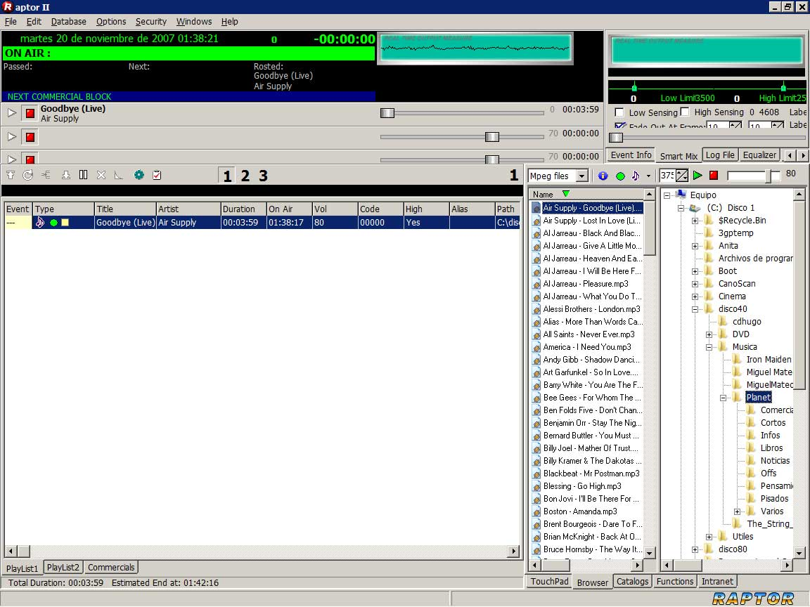
Raptor II in its last version, from 2007.
Contents
Part I · Technical features
What MCP Raptor Player is
Requirements and formats
Architecture and audio engine
Automatic analysis of the songs
Mixing between songs and leveling
Effects, overlay and effects board
Item types
Saved data
Remote control through MCP
Part II · Using the interface
Getting started
The main window
Building and managing the playlist
Playing and mixing
The effects panel
The track editor
Classifying the catalog by type
Scheduled breaks and commercials log
Keyboard shortcuts
Catalog maintenance
Troubleshooting
Design decisions
Appendix
Plug-ins that improve the sound
Part I · Technical features
1. What MCP Raptor Player is
MCP Raptor Player is a desktop player designed for radio broadcasting. It brings together in a single window:
A sequential playlist that goes from one song to the next with a mix (crossfade), either manual or calculated from the analysis of each song.
An effects board with 10 buttons per page, and as many pages as needed, to fire effects, voice-overs and jingles over the music (overlay, talking or playing over the song).
A track editor with a waveform to adjust the start and end of each song, its intro, its outro, the window where it can be talked over and its data (type, title, artist, genre, rating, BPM).
A built-in MCP server (Model Context Protocol) that lets an AI assistant such as Claude operate the player: build the playlist, fire effects, mix or ask what is playing.
2. Requirements and formats
Operating system
Windows 10 or 11. Linux with PulseAudio or PipeWire (it also works on WSL2 with WSLg); without a sound server it uses ALSA. macOS 11 or later, on Apple Silicon or Intel (experimental: not yet tested on a real Mac).
Screen
At least Full HD (1920 × 1080), with Windows scaling at 100 %, 125 % or 150 %. At 150 % the toolbar buttons show only their icon so that the effects board fits too (see Hide button labels, in the Window menu). On larger screens (QHD, 4K) the interface uses the extra space; texts that do not fit show a tooltip with the whole text.
Its own format (JSON) and M3U to load playlists from other programs.
Audio output
The system's default output for the music. The editor's preview can use another sound card (for example, headphones).
3. Architecture and audio engine
Block diagram
The diagram shows the parts of the program and how they relate: at the top, where the commands come from; in the middle, the logic that decides what plays and when; at the bottom, the path of the audio to the sound cards.
Parts of the program: commands (blue), logic (orange), data (purple), audio (green) and sound cards (grey). The dotted line is the preview when it shares the music output. Each engine decodes its file in its own thread and leaves it in a 1 s buffer.
What each part does
Block
Function
Main window, editor and MCP server
They receive the commands: from the user (clicks, keys) or from an AI assistant connected through MCP. All three inputs reach the same controller, so the same rules apply.
Controller
The center of the program. It keeps the playlist and the selector, applies the rules (for example, that an Effect does not go into the playlist), updates the screen and, in a periodic cycle, tells the managers to move forward.
Saved data
Reads and writes the records of each file, the effects board, the playlists, the preferences and the commercials log (see section 8).
Analysis
Works in the background without slowing down the interface: it reads tags and calculates the waveform, mix points, tempo, loudness and the suggested overlay window. Its results go back to the controller and are saved in the records.
Playback manager
Decides the sequence: which song comes next, when the mix starts, how long it lasts and at what volume (leveling). It alternates engines A and B: while one ends, the other comes in.
Effects manager
Decides when an effect plays (free mode or locked to the overlay window), at what volume and how much the music is ducked. It schedules the ducking and the return of the music in the mixer's attenuator.
Preview output
Chooses where the editor's preview plays: through the preview voice of the main mixer (with the music stopped) or through a separate mixer on another sound card.
Engines
Each one opens a file, decodes it and resamples it to the sound card's rate in its own thread, and leaves the audio ready in a buffer. They know the position of their song and can start on an exact frame.
Main mixer
Sums the four voices (engines A and B, effects and preview) with their volume, applies the shared attenuator to the music and the soft clipper, and delivers the result to the sound card. It keeps the frame clock that mixes and effects are synchronized with.
Separate mixer
It only exists if another output was chosen for the preview. It has its own clock and its own attenuator, so testing does not touch what goes on air.
Engine features
Native decoding of every format, without depending on system codecs, and high-quality resampling to the sound card's rate.
Its own four-voice mixer: two alternate for the music (while one ends, the other comes in), one plays the effects board and the fourth is the editor's preview.
Sync to the audio frame: the track that comes in on a mix and the effects are scheduled at the exact instant of the output, not "when the interface gets there".
Shared attenuator: while an effect plays, the music goes down with smooth scheduled ramps; a mix that starts during the effect already comes in ducked.
Soft clipper on the final sum: above a certain level the signal is compressed toward the maximum without the click of hard clipping.
One second of buffer per voice, so a busy computer does not cause dropouts.
Preview through another output: if another sound card is chosen, the preview opens its own mixer there (song and test effect), so you can preview while the music is on air.
4. Automatic analysis of the songs
Every file that enters the playlist is analyzed in the background, without slowing down the interface. The result is saved and is not calculated again.
Tags: title, artist, genre, album, year and length.
Waveform, used in the editor and for all the following analysis (it is cached).
Automatic points: start and end of the song without the silences, intro (how far the instrumental beginning goes) and outro (from where the song starts to fade).
Tempo (BPM) and beat phase, estimated in three bands (low, mid and high), so a song without a kick drum also marks the pulse.
Loudness in LUFS and true peak, to level the volume between songs.
Suggested overlay window: it looks for an instrumental section of at least 4 seconds (without sung vocals) where the song can be talked over. It gets it right on most songs with vocals; with heavily processed vocals, choirs or rap it may fail, and it can always be corrected by hand.
Everything the analysis proposes is shown as Automatic. If the user changes it, it becomes Manual and the analysis no longer touches it. The editor's Back to automatic button undoes the manual changes.
5. Mixing between songs and leveling
Fader (manual mix)
The Fader slider sets the mix seconds (0 to 15) when moving on with Next and the fade-out seconds when pressing Stop. When a song ends on its own and moves on to the next one, they overlap for as many seconds as the shorter of the outgoing song's outro and the incoming song's intro (the Mix column of the playlist shows them).
How the outgoing song goes down
From the outro: if the outro starts before the mix, the outgoing song already starts going down from the beginning of its outro, evenly, until it is 6 dB lower when the next one comes in. That way the ending does not stay at full volume waiting for the mix.
During the mix: it goes down with a slope that gets steeper toward the end: halfway through the mix it is 12 dB lower and at three quarters, more than 24 dB lower, so it does not cover the incoming song. The incoming song rises quickly at first (a sine curve with smart crossfade, a straight line without it).
If the outgoing song has a natural fade (it goes down on its own in the recording), it is not attenuated before the mix: during the mix it is only followed in a straight line down to silence.
Smart crossfade
With the Smart crossfade option, the mix is decided from the analysis of both songs:
No dead silences: the outgoing song ends at its end mark and the incoming one starts at its start mark.
Adapted length: the mix lasts as long as the longer of the outgoing song's outro and the incoming song's intro, with a minimum of 2 and a maximum of 12 seconds.
Even volume: the incoming song rises with a power curve and the outgoing one goes down as explained above. If the incoming song already has a natural fade in that section, it is not attenuated again, to avoid a volume "dip".
Beat alignment: if the end of the outgoing song and the beginning of the incoming one have the same tempo (or one is double the other), the incoming song is moved earlier or later by less than half a beat so that the beats of both match.
Level volume
The Level volume option brings every song to the same loudness, chosen in the combo box next to it: −14 LUFS (more dynamic range), −11 LUFS (the default) or −8 LUFS (louder). Each target has limits for raising and lowering and a true-peak ceiling.
6. Effects, overlay and effects board
Effects board: 10 buttons (0 to 9) per page and as many pages as needed. Each button has an audio file; they are fired with a click or with the 0–9 keys. Hovering over a button shows its file and, if it has one, its note (for example, "Short applause: use at the end of the show"); buttons with a note have a small icon at the bottom left. The note is written with the button's Edit..., on the Data tab.
Overlay window: the section of each song where it can be talked over (usually instrumental). It is suggested automatically and can be adjusted in the editor.
Free mode: the effect plays as soon as it is pressed. Locked mode (without Free mode): the effect must play entirely within the overlay window of the current song. Before the window, it waits for it to open. Inside, it plays if it still fits completely. If it no longer fits, it waits for the next song's window. A song without a window lets the effect play right away.
Music ducking: the music goes down an instant before the effect and comes back with a ramp when it ends. With Smart adjustment, the effect's volume is matched to the music and the music goes down according to how loud that section is.
Pinned effect: a song can have a pinned effect that plays on its own, every time the song airs, within its window.
Effect section: if the start and end of an effect's file are set by hand in the editor, only that section plays.
7. Item types
Every item in the catalog has a type that decides how it is handled: Song, Edited song, Commercial, Announcement, Advertising, Podcast, Effect or Dry voice. The genre is left free for the musical style (Rock, Pop, Institutional...) and changes nothing about how it sounds: a song of genre "Advertising" is still a Song. An unclassified item plays like a Song, but cannot go in breaks or orders.
Type
Stripe
What it is
In the playlist
Song
Music: it mixes with the previous and the next one.
Yes. Validation marks duplicates.
Edited song
A song with a special voice-over or edit for radio (radio edit, voiced intro, shortened version). It is handled like a Song; the type helps to recognize it and search for it (type:"edited song"). Its icon is golden.
Yes, like a Song: it mixes and validation marks duplicates.
Commercial
Billable, scheduled advertising: spots booked with air times.
Yes. It forms a break; it is written to the commercials log.
Announcement
The station's own message (programming promos, institutional notices).
Yes. It forms a break; it is not written to the log (it is not billed).
Advertising
Billable but unscheduled advertising (it airs when there is room).
Yes. It forms a break; it is written to the commercials log.
Effect
Short audio clips for overlay: used to play over the songs.
No. They can only be on the effects board.
Dry voice
Voice-overs. They are also used to play over songs, but they can also be inserted in the playlist as separators.
Yes, as a separator; it is not written to the log.
Podcast
A complete pre-recorded show. It can be scheduled: it is booked in the break schedule to air at a certain time (section 17).
Yes, without mixing. It can go in a break; it is not written to the log (it is not billed).
Each type has its icon, shown next to the type in the playlist, the catalog, the spots, the breaks, the orders and the editor; the icon of the types without mixing has the color of their stripe. An item without a type is marked with in the spot selectors, and the TTH announcement and the locked blocks have their own.
A Song or an Edited song mixes with the previous and the next one. The other six types share these rules:
They play without mixing: they do not mix with the previous song or the next one; the next one starts when the previous one ends.
They can repeat in the playlist (for example, a commercial in several breaks); validation does not mark them as duplicates.
They have no overlay window or pinned effect. In locked mode they do not accept effects (the effect waits for the next song); in free mode, they do.
When the playlist is shuffled, they are shuffled like any song. For a break to stay whole, in its place and in its order, enclose it in a locked block (section 12).
The editor's effect combo boxes (pinned effect and test effect) only offer the effects board files of type Effect or Dry voice.
Catalogs from earlier versions. Before, the genre worked as the type. The first time this version is opened, each record gets its type from its genre, regardless of case or accents, and in plural or compound forms ("Anuncios", "Publicidad radial", "Efectos de sonido", "Tema seco"); any other genre ("Rock") becomes Song, and records without a genre are left unclassified. The genre is not touched, and before rewriting the catalog a copy is left, mezcla.json.antes-del-tipo. The same goes for a new file: if its tags say "Comercial", it comes in as Commercial.
Searching by type (type: or tipo:) accepts the names in English and in Spanish: type:"edited song" and tipo:"tema editado" find the same items.
8. Saved data
The player saves everything in the .mcp-raptor-player folder inside the user's folder (on Windows, C:\Users\<user>\.mcp-raptor-player; on Linux, ~/.mcp-raptor-player):
File or folder
Contents
mezcla.json
The record of each audio file: mix points, overlay window, type, title, artist, genre, album, year, note, rating, BPM, pinned effect and last play. If the file comes back to the playlist, it gets everything back.
botonera.json
The effects pages, the file of each button and the effects panel settings.
preferencias.json
Fader, mixing options, last playlist and last song, editor position, preview output and volume, folder of the TTH announcement voice clips, weather location, interface language, whether the button labels are hidden and whether the effects settings are expanded.
listas\lista.json
The current playlist, restored when the program opens.
tandas.json
The scheduled breaks: spots, times, tolerance, maximum length and the last airing handled (so it is not repeated if the program restarts).
anunciantes.json
The advertisers' records: trade name, company name, tax ID (CUIT), sector, contact, phone, email, address, agency, notes and whether it is active.
ordenes.json
The advertising orders: advertiser, sector, validity, days, time slot, frequency, spots in rotation and allowed breaks.
pauta\YYYY-MM-DD.json
The schedule of each day (where each order spot went and what did not fit) and the pending make-goods. They are kept for three months, like the log.
certificados\
The proof-of-broadcast certificates per advertiser, in CSV.
comerciales\YYYY-MM.csv
The log of on-air airings of billable advertising (Commercial and Advertising), one file per month. The current month and the two previous ones are kept.
reubicaciones.json
The files relocated in catalog maintenance (old path and new path), so playlists saved with the old path open with the new one.
servicios\
The last time, temperature and humidity announcement built and the last voice said over a bed (they are rebuilt every time they air).
ondas\
Waveform cache (it can be deleted; it is calculated again). Catalog maintenance deletes the ones no longer used.
logs\
The program's log, useful to diagnose problems.
The RAPTOR_CARPETA_DE_DATOS environment variable lets you use another folder (for example, one per studio).
9. Remote control through MCP
The player includes an MCP server that listens only on the computer itself, at http://127.0.0.1:8765/mcp, and rejects requests from web pages. The RAPTOR_MCP_PUERTO variable changes the port; with 0 the server is disabled.
To connect it with Claude Code:
claude mcp add --transport http raptor http://127.0.0.1:8765/mcp
The available tools are (their names and descriptions are in Spanish; the assistant understands them in any language):
Tool
What it does
listar_pistas
Lists the tracks with their data, mix points and which one is playing.
agregar_pistas, quitar_pistas
Adds files or folders, with or without their subfolders (at a position), or removes tracks by position or path.
mover_pista, ordenar_lista
Moves a track or sorts the playlist.
definir_mezcla, sugerir_puntos
Sets start, end, intro, outro and overlay window, or asks what the analysis proposes.
definir_datos
Sets the type (Tema, Comercial, Anuncio, Publicidad, Efecto or Seco, the catalog names in Spanish; empty leaves it unclassified) and corrects title, artist, genre, album, year, note, rating, BPM or pinned effect. By path it also works for an effects board effect or a song that is not in the playlist. If the track is unclassified and a genre that names a type is given ("Comercial"), it takes that type.
estado_del_reproductor
What is playing, position, next track, controls and effects board.
controlar_reproduccion, seleccionar_pista
Play, pause, stop, next, previous; mark the next track.
ajustar_controles
Volume, fader, repeat, crossfade, leveling and effects options.
Schedules a break (or replaces the one with the same name): spots, first time, interval, time limit, days, tolerance before and after, mode (tolerancia or exacta), priority and maximum length (duracion_maxima_segundos).
encolar_tanda
Queues a scheduled break right away at the next cut, outside its time.
listar_tandas
The scheduled breaks with their rule, their spots, the next airing and the last one handled.
quitar_tanda
Removes a break from the schedule (what was already queued stays in the playlist).
registro_de_comerciales
On-air airings between two dates, with their break and their order; it can be filtered by advertiser, title or break.
programar_orden
Loads an advertising order (or replaces the one with the same name): advertiser, sector, validity, days, time slot, a frequency (cada_minutos, veces_por_dia or horarios), spots, allowed breaks and priority.
listar_ordenes
The orders with how many of the airings they ask for were placed today.
quitar_orden
Removes an order: its spots are no longer distributed.
pauta_del_dia
Where each order spot goes in the breaks of a day and what could not be placed, with the reason.
certificado_de_emision
Certificate for an advertiser between two dates: booked, aired complete, cut and fulfillment per order; it is also saved as a CSV.
registrar_anunciante
Loads or updates an advertiser's record; omitted data keeps its value. It validates the tax ID (CUIT) and the email. With nombre_anterior it renames it and its orders move to the new name.
listar_anunciantes
The advertisers with their record, their orders and what is missing to bill them, and those named in orders that have no record.
quitar_anunciante
Removes the record of an advertiser without orders (if it has some, they must be removed or the advertiser deactivated).
encolar_pista
Queues a track as the next one: it goes right after the one playing and mixes with its end. If that takes it out of a locked block, it says so and asks to confirm with sacar_del_bloque.
buscar_en_catalogo
Searches the catalog by title, artist, type, genre, album or file, or with the search prefixes (rating:>=4 -played:<30d, section 12), and returns their paths, to insert them with agregar_pistas.
bloque_fijo
Encloses a section of the playlist in a locked block, which Shuffle and BPM do not change.
base_hth
Changes the music bed of a TTH announcement in the playlist or removes it.
insertar_hth
Inserts the time, temperature and humidity announcement (with a music bed, if there is one) at a position or after the selected one.
A connected assistant can, for example: "after the song that is playing, add an hour of songs that haven't been played in a long time, with a BPM no higher than 70" or "play effect 4 of page 1 over the song". The same rules as in the interface apply through MCP: a file of type Effect does not go into the playlist and a song in the playlist cannot become an Effect.
Part II · Using the interface
10. Getting started
Windows
Run mcp-raptor-player.exe (in the published packages, MCPRaptorPlayer.exe). To have the icon on the taskbar, open it and choose Pin to taskbar. This manual opens from Help › Manual if the file Raptor_Manual_en.pdf is next to the executable.
Linux
The recursos/linux/instalar.sh script copies the program to ~/.local/bin and installs the launcher and the icon, so it shows up in the applications menu.
macOS (experimental)
Unzip MCPRaptorPlayer-macos-universal.zip and drag MCP Raptor Player.app to Applications. The app is not notarized by Apple: the first time, macOS refuses to open it. Open it once, close the warning and, in System Settings › Privacy & Security, choose Open Anyway (on macOS 14 or earlier, a right-click on the app › Open is enough). The manuals are inside the app: Help › Manual finds them on its own. It has not been tested on a real Mac yet; if something does not work, let us know.
On opening
The window is maximized and restores the last playlist, with the last song marked. If the MCP server cannot use its port, the player works anyway, without remote control.
Language
The interface is available in Spanish and English. The first time, it opens in English if the system account is in English, and in Spanish otherwise. To change it, use Window › Idioma / Language (the menu has the same name in both languages, so you can find it even if you don't understand the current one). The change is immediate, without restarting, and is remembered for next time.
Menus, buttons, columns, help, notices and messages are translated, as well as the type names and the proof-of-broadcast certificate.
The saved data does not change (the catalog, the playlists, the breaks, the orders and the commercials log stay the same in any language), nor do the descriptions of the MCP tools, which are in Spanish.
Dates are shown as day/month/year in both languages.
This manual exists in Spanish and in English: Help › Manual opens the one in the interface language (Raptor_Manual_es.pdf or Raptor_Manual_en.pdf) and, if it is missing, the other one.
11. The main window
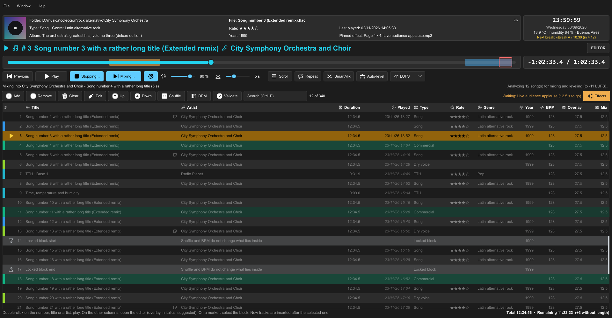
Main window with a sample playlist.
From top to bottom:
MenuFile (open and save playlists, catalog maintenance), Window (editor position, language) and Help (this manual and About, with buttons to write to the author, open the repository on GitHub and donate through PayPal).
Details of the marked song (or the one playing): the folder and file name, type and genre, album, rating, year, last play and pinned effect (the title and artist are in the playlist and, for the one playing, below, in large type). With the button in the corner () the panel shows the song's waveform instead (see below). On the right, the clock: the time, the date, the weather of the chosen location (temperature, humidity and location; a click lets you change it and hovering shows how long ago the last reading was) and, if there is one, the next break.
What is playing and, on the same line, the options Scroll, Repeat playlist, Smart crossfade, Level volume and the LUFS target.
Progress bar: a click or a drag jumps to that position. It shows the overlay window (orange if suggested, pink if you set it), the outro (light blue suggested, green set; from there the song starts going down) and in purple where they overlap. A red box marks the effective mix with the next song: the section where both play together, which with smart crossfade lasts 2 to 12 s and can be shorter or longer than the outro. On the right, the time: a click toggles between elapsed, remaining and remaining or elapsed seconds over the total; it turns orange while mixing into the next song.
Transport (Previous, Play/Pause, Stop, Next), the gear () and the volume (, double-click: 80 %) and fader (, mix and fade seconds; double-click: 5 s) sliders. The gear shows or hides the volume, the fader and the playback options: when hidden, there is more room for the song name and the window looks cleaner. The choice is remembered.
Playlist toolbar: Add, Remove, Clear, Edit, Up, Down, Shuffle, BPM, Validate, the search box and the Effects button, which shows or hides the effects board.
The playlist: position, title, artist, duration, type (with its icon), rating, genre, year, BPM, overlay window and mix seconds with the next one; each header has the icon of its data. The track that is playing (or paused) has an amber background, the number in bold and a play icon next to the number.
Status bar: help, notices and, on the right, the total of the playlist and what is left to play (discounting the mixes).
Waveform in the details panel
The button in the corner of the details panel toggles between the song's data and its waveform: level bars with the upper half of the wave (the peak, fainter, and on top of it the average level), scaled to the loudest point of the song. It shows at a glance where it starts, where it builds up and where it ends. The choice is remembered.
Waveform of the song that is playing, with its technical data on top: what has been played is in the progress bar color, the overlay window in orange and the mix with the next song in the red box.
It shows the same song as the data: the one marked with the selector or, if there is none, the one playing.
At the top is the file's technical data: format, sample rate, bits per sample (in lossless formats), channels and average bitrate in kbps (for example, MP3 · 44.1 kHz · stereo · 320 kbps) and, at the end, the title and artist; these are omitted for the song that is playing, because they are already shown below, in large type.
The progress bar has the same width as the panel, and the time display the same as the clock: the marks of the waveform and those of the bar line up one above the other.
It uses the same colors as the progress bar: the overlay window in orange (pink if you set it), the outro in light blue (green if you set it), purple where they overlap and the red box of the effective mix with the next song.
If it is the song that is playing, the part already played is in the progress bar color, with a line at the position, and a click jumps to that point.
It is built from the waveform the playlist analysis already saved, in another thread and with 200 bars: it does not read the audio again or affect playback. If the song is still being analyzed, it appears when the analysis finishes.
Data icons
Each piece of data has an icon, the same in every window: in the column headers (playlist, catalog, spots, breaks, orders, advertisers and maintenance) and in the labels of the editor's Data tab. Hovering over a header shows what the column contains. If a column gets too narrow (small window or large font), the header shows only the icon and the full title appears in the tooltip.
Icon
Data
Icon
Data
Title, name of a break
Artist
Duration
Type (in each row, the type's icon: see section 7)
Rating
Genre
BPM (tempo)
Overlay window
Mix seconds
Album
Year
Note
Last play (Played)
Already in the playlist
Advertiser
Company name
Tax ID (CUIT)
Sector
Contact
Advertising order
Active
Status
Times of a break
Entry (tolerance or exact time)
Spots of a break
Next airing
Airings of an order
Validity
Airings placed today
Old and new location of a file (maintenance)
Color stripes in the playlist
On the left of each row there can be one or two stripes:
Color
Meaning
Commercial (the row also has a teal background, like Announcement and Advertising)
Announcement
Advertising
Dry voice
Podcast
Effect (only seen if a file changes type while playing; it cannot stay in the playlist)
Time, temperature and humidity announcement (TTH)
Locked block start or end marker (the whole row in grey, with its icon). The tracks inside the block have this line on the right.
The song has a pinned effect
Matches the search
12. Building and managing the playlist
Add opens a menu with these options:
Files...: the file picker (several can be chosen).
Folder with subfolders...: you choose a folder and it is scanned with all its subfolders. Before adding, a notice says how many audio files it found and in how many subfolders, and asks for confirmation. They come in folder by folder: first the files of each folder by name and then those of its subfolders.
From the catalog... (Ctrl+Shift+F): opens the catalog search (see below).
Lock the selection as a block, Locked block start and Locked block end: locked block markers (see below).
New tracks go in after the selected one, or at the end if there is no selection. When done, the status bar sums up how many were added and why the rest did not go in: those already in the playlist are skipped and those of type Effect are left out.
Remove takes out the selected tracks; Clear, the whole playlist. Neither deletes files from disk. The track that is playing (or paused) is not removed: if it is in the selection, the others are removed and it stays. If the selection has locked block markers and songs, the first Remove takes out only the markers and leaves the songs selected; a second Remove takes them out.
Up and Down move the selection.
Shuffle randomly reorders the whole playlist or, if several tracks are selected, only those. The song that is playing stays first. What is inside a locked block is not touched: so that a commercial break does not come apart, enclose it in a locked block.
BPM sorts by tempo, from lowest to highest (with the same tempo, the one with the higher rating first). It does not touch locked blocks either.
Validate checks that the files exist (it offers to remove the missing ones) and looks for repeated songs: same title and artist in another file. It asks one by one whether to remove them.
Search (Ctrl+F): searches by title, artist, type, genre, album or file. #508 jumps to track 508, and with prefixes you search by a specific piece of data: rating, year, BPM, length or date of last play (see Search with prefixes, below). ↑↓ or Enter jump between results; Esc clears.
Columns: number, Title, Artist, Duration, Type, Rating (0 to 5 stars, set in the editor), Genre, Year, BPM, Overlay and Mix. A song with a note shows a small icon to the right of the title; hovering over the title shows the note and the file path. Overlay shows only how many seconds the overlay window lasts (in italics if it is the one suggested by the analysis); its start and end are shown on hover, in the details panel and in the editor.
Selection: click for one track, Ctrl+click to add and Shift+click for a range.
Double-click on the number, title or artist: plays that song. On the other columns: opens the editor. On a locked block marker: selects the whole block.
Right-click on a row: Play, Queue as next (moves the song right after the one playing, so the end of the current one mixes into it regardless of the playlist order; the rest stays in its order; if the song is inside a locked block and this takes it out, it asks for confirmation), Edit track..., Remove from the playlist and Remove from the catalog... (removes the song and deletes all its saved data; the audio file is not deleted). On a TTH announcement there is also TTH announcement bed (see section 14).
Named playlists:File › Open playlist (Ctrl+O, also M3U), Save playlist (Ctrl+S) and Save playlist as (Ctrl+Shift+S). The window title shows the open playlist and an asterisk if it has unsaved changes. M3U playlists from other programs open even if they use the Windows encoding (those from Winamp or Windows Media Player) or have file:// addresses (those from VLC), and their relative paths are relative to the playlist's folder. A playlist saved on another computer or by another user keeps its locked blocks and TTH announcements.
Locked blocks
A locked block is a section of the playlist that Shuffle and BPM do not change: for example, a break in its order, a show put together by hand or what must air at a given time. It is marked with two special rows, a start and an end, shown in grey with their own icon; the tracks between them have a grey line on the right.
Add › Lock the selection as a block puts a start before the first selected track and an end after the last one. Locked block start and Locked block end insert just one, after the selected one.
When shuffling or sorting, what is inside stays in its place and in its order, and only what is outside is reordered. The status bar says how many songs were left unchanged.
The markers do not play: playback and mixes go right past them, without notice, and the mix happens between the previous song and the next one. They add no length and are saved with the playlist.
A start without an end locks until the end of the playlist; an end without a start locks from the previous end (or from the beginning).
Double-click on the start or the end selects the whole block, with its two markers.
With the block selected, Removeundoes it: it takes out the markers and the songs stay in their place, selected. If Remove is pressed again, the songs are removed too. A loose marker is removed like any row, and is moved with Up and Down.
Search the catalog
The catalog keeps the data of every song that ever entered the playlist. File › Search the catalog..., Add › From the catalog... or Ctrl+Shift+F open a search window to bring them back without browsing folders.
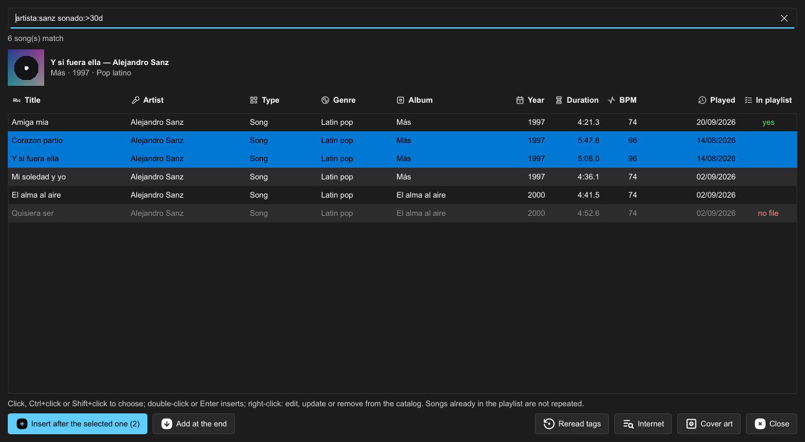
Alejandro Sanz songs that have not been played for more than 30 days ("artista:sanz sonado:>30d", the same as "artist:sanz played:>30d"); two chosen to insert.
It searches as you type, by title, artist, type, genre, album or file name. All the words must appear, regardless of case and accents. It also understands the prefixes of Search with prefixes (for example rating:>=4 played:>30d). With empty text it shows the whole catalog, by artist and title (up to 500 songs: if there are more, refine the search).
The Played column shows the day of the last play (empty if it never aired).
You choose as in the playlist: click, Ctrl+click and Shift+click.
Insert after the selected one (or Enter, or double-click on a song) puts them in the playlist after the track selected in the main window; Add at the end, at the end. Those already in the playlist are not repeated.
The In playlist column marks those already there. Those listed as no file were moved or deleted: they are not inserted (see section 19). Those of type Effect do not appear, because they only go on the effects board.
Esc clears the search and, with empty text, closes the window.
Search with prefixes
The playlist search (Ctrl+F) and the catalog search (Ctrl+Shift+F) understand, besides single words, conditions with a prefix to search by a specific piece of data. Several can be combined, separated by spaces: the song must meet all of them. The prefix ignores case and accents (Genre: is the same as genre:). Hovering over the search box shows a summary. Prefixes can be written in English or in Spanish, in either interface language; the Spanish ones are titulo:, artista:, genero:, tipo:, nota:, archivo:, anio:, ranking:, duracion: and sonado:, with hoy, ayer, nunca and the units s (weeks) and a (years).
Type
Finds
#508
Track 508 of the playlist: the selector jumps to it. #10..20 (or #10-20) marks a range. Only in the playlist: the catalog has no positions.
title:artist:genre:album:type:note:
The text only in that field: artist:sanz, type:commercial, note:request. For a phrase with spaces, in quotes: genre:"rock nacional". Abbreviations: t:, a:, g:.
file: or path:
The text in the full path of the file, with its folders: file:medleys. (Without a prefix, the catalog searches only in the file name.)
rating: (or r:, stars:)
By stars: rating:5, rating:>=4, rating:<2.
year:
By year: year:1997, year:1990..1999 (or 1990-1999), year:>=2000.
bpm:
By tempo, the one set or the analyzed one: bpm:120 (from 119.5 to 120.5), bpm:118..126, bpm:>128.
duration: (or dur:)
By length, in minutes or in minutes and seconds: duration:4 (from 4:00 to 4:59), duration:<3:30, duration:3..5.
How long ago: played:7d or played:<7d (in the last 7 days), played:>30d (more than 30 days ago). Units: h hours, d days, w weeks, m months, y years.
A date: played:2026-11-03, played:03/11/2026, played:3/11 (this year) or a whole month, played:2026-11. Dates are written day/month/year.
Before or after a date, or between two: played:<01/10/2026, played:>=2026-11-01, played:2026-10-01..2026-10-15.
- in front
Negates any condition or word: -genre:cumbia, -sanz. -played:<30d finds what did not play in the last 30 days, including what never played (whereas played:>30d leaves out what never played).
Numeric data is compared with =, >, >=, < and <=, or with a range from..to (one side can be left open: year:..1979, bpm:130..). A song without the data (no year, no BPM, never played) does not meet the condition. If a prefix has a value that cannot be understood, the search box shows Invalid search and the status bar explains what to write. A word with a colon that is not a prefix (12:30) is searched as text.
Examples:
genre:"rock nacional" rating:>=4 -played:<15d: Argentine rock with 4 or 5 stars that has not aired in the last two weeks.
a:soda year:1980..1989: Soda Stereo from the eighties.
bpm:120..128 duration:<4: songs for segueing, under 4 minutes.
type:commercial played:today: the spots that have already aired today.
played:never: what has not aired yet.
13. Playing and mixing
Play starts or resumes; the same button pauses.
Next moves to the song marked with the selector (or the following one) mixing for the fader's seconds. To prepare the next song, mark it with a click: it becomes the next one.
Previous goes back to the previous song, without mixing.
Stop stops with a fade of the fader's seconds; pressed again (or with the fader at 0), it stops instantly.
Into or out of something that is not a Song (commercial, dry voice...), Next fades out and what comes next starts afterwards, without mixing.
Missing files: if the file of a song in the playlist was moved or deleted, the sequence (and Next) skips it and goes on with the next one that exists, without cutting the broadcast. The status bar says which song was skipped; Validate offers to remove it from the playlist.
Scroll keeps the song that is playing in the center of the playlist. Repeat playlist goes back to the beginning when it ends.
While new songs are being analyzed, the status line says "Analyzing N song(s)".
14. The effects panel
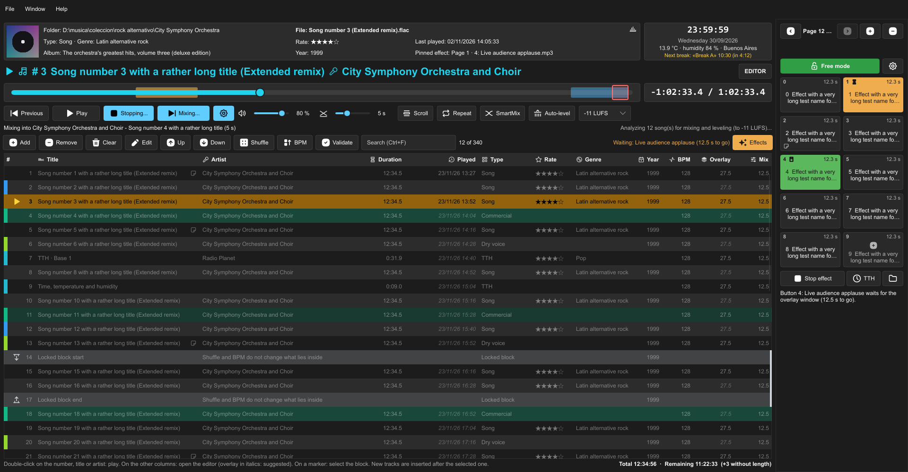
The effects panel opens with the Effects button.
Buttons
A click (or the 0–9 key) fires the button's effect. If the button is waiting, the click cancels the wait. An empty button shows a +: a click assigns a file to it.
Each button shows its number, the catalog title (or, if it has none, the file name without the extension) in up to two lines —a longer name is cut with "…" and the full one shows in the tooltip, along with the path— and the length (that of the section, if it was trimmed). In orange with an hourglass: waiting for its window. In green with a speaker: playing.
Right-click: Assign file..., Edit... (opens the editor with that file, to set its type or the section that plays), Clear and Insert in the playlist (disabled for the Effect type).
The arrows change the page; + adds a page and − removes the one in view.
Stop effect cuts the effect that is playing (or the one waiting) and brings the music back to its level.
Time, temperature and humidity announcement (TTH)
At the bottom of the panel, below the effects board messages, the TTH button inserts the time, temperature and humidity service in the playlist, after the selected track. In the playlist it shows as "Time, temperature and humidity", with type TTH and a teal stripe.
The weather the announcement will say is shown in the main window's clock: temperature, humidity and location; on hover, how long ago the last reading was (for example "Buenos Aires: 13.9 °C, humidity 84 % — Last reading 4 min ago"). It is queried from Open-Meteo every 10 minutes from the moment the program opens. If there is no connection the clock shows it in red as no data, with the age of the last reading if there was one; while the data is less than an hour old it is still used, and after an hour the announcement says only the time.
Right-click on TTH opens a menu with:
Insert the TTH announcement: the same as a click.
Change the weather location...: opens the Weather location window. Type the name of the city (for example "Rosario") and press Enter: the search is done on the free Open-Meteo service, without a key, and shows up to 20 locations with their district, province or state and country, to tell apart those with the same name. Choose one and press Use this location (or double-click). The weather of the previous location is discarded and the new one is queried at once; the choice is saved. A click on the clock's weather opens the same window.
Update the weather now: queries the weather without waiting the 10 minutes (for example, when the connection comes back).
Voice clips folder...: the same as the folder button.
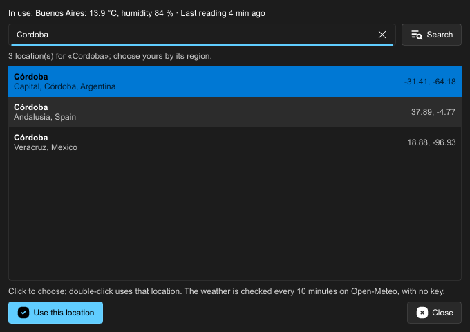
The Weather location window: each result shows its region so you can choose the right one.
It is built when it goes on air, not when it is inserted: right before playing, the clock's time is joined with the last known weather, so it says the real time even if it was inserted an hour earlier. The voice clips are in Spanish, for example: «Son las quince y treinta. Temperatura: diecisiete grados. Humedad: setenta y seis por ciento.» ("It's three thirty. Temperature: seventeen degrees. Humidity: seventy-six percent.")
No internet needed for the voice: it comes from pre-recorded voice clips, joined by trimming their silences and with a short pause between phrases. Each clip can have two takes of the same phrase (for example 15.mp3 and 15'.mp3, one with more emphasis and one flatter): in each announcement one of the two is chosen at random for each piece, so it does not always sound the same.
The weather (temperature and humidity of the chosen location; Buenos Aires by default) is queried every 10 minutes on the free Open-Meteo service, from the moment the program opens (the main window's clock shows it). Without a connection, or if the last data is more than an hour old, the announcement says only the time. The location is changed with a right-click on TTH or with a click on the weather text.
With music beds: if the voice clips folder has a bases subfolder with short jingles, the button inserts a bed chosen at random (without repeating the previous one). In the playlist it shows as "TTH · bed name", with the same stripe.
The bed is a regular song: it is analyzed, mixes with the previous and the next song, and is edited in the editor like any other (start, end, intro, outro).
The bed's overlay window marks where the announcement is said. When the bed starts playing, the voice is built with the time at which that window opens and plays there, like a pinned effect. While it speaks, the bed always goes down (even if Duck the music during the effect is unchecked) and comes back when it ends, with the effects panel settings. Without a set window the one suggested by the analysis is used; without any, the voice starts with the bed.
The voice lasts about 9 seconds: if the window is shorter, the status bar warns about it when saving the bed in the editor and when it plays.
The same bed can be in the playlist several times: Validate does not count it as a repeated song.
Changing or removing the bed: with a right-click on the announcement's row, TTH announcement bed lists the beds to choose another one, and No bed (voice only) leaves it without background music. It also gives a bed to an announcement that had none. The announcement that is playing is not changed.
Without beds, the announcement is the voice alone and plays without mixing, like a commercial: the previous song ends and the announcement starts afterwards. It is not analyzed, edited or counted as a play, and it can be in the playlist several times.
The folder button, next to TTH, chooses the voice clips folder. The first time TTH is pressed with no folder chosen, it asks for it too. It must have the subfolders hora (00 to 23) and minutos (00 to 59, where 00 is "o'clock"); temperatura (-10 to 50), humedad (000 to 100) and bases are optional. A locuciones folder next to the program is also found automatically. The voice clips are not included with the program: herramientas/generar_locuciones.py in the repository generates them with ElevenLabs and your own key.
If it cannot be built (for example, the voice clips folder was deleted), the announcement is skipped and the next song follows, so as not to say an old time.
Settings
Next to Free mode is the gear button, which shows or hides the rest of the settings (from Duck the music during the effect to Returns in). Collapsed, the ten buttons, Stop effect, TTH and the voice clips folder stay in view without scrolling, even in Full HD with 150 % scaling. The settings stay active even when hidden, and the program remembers whether they were collapsed or expanded. If height is short, the effect buttons shrink before the panel needs to scroll.
Control
What it does
Free mode
Checked: the effect plays when pressed. Unchecked (locked): it waits for the song's overlay window.
Duck the music during the effect
Turns on music ducking.
Smart adjustment
Matches the effect to the music and decides how much to duck it according to how loud that section is.
Effect (dB)
Effect volume. With smart adjustment, 0 dB is the loudness of the music. Double-click: 0 dB.
Separation (with smart adjustment)
How many dB below the effect the music stays: with more separation, the music goes down more. Depending on how loud the section is, it goes down by up to the separation plus 6 dB. It ranges from 4 to 24 dB; double-click: 12 dB. It also applies to the TTH announcement voice over its bed, which always ducks the bed with smart adjustment, even if the panel says otherwise: if the voice gets lost in the bed, raise the separation.
Music at (without smart adjustment)
Fixed level of the music during the effect. Double-click: 50 %. The same slider shows the separation or this level, depending on whether smart adjustment is on.
Ducks in
How long the music takes to go down; it ends right when the effect starts. Double-click: 40 ms.
Returns in
How long the music takes to come back after the effect. Double-click: 0.8 s.
15. The track editor
It opens with a double-click on the data columns of a row, with Edit on the toolbar, with the row's context menu or, for an effect, with Edit... in the button's menu. It remembers its last position and size.
Several monitors. If the editor was left on a monitor that is no longer connected, it appears centered over the main window when opened. The Window menu also offers Bring the windows to the main window, which centers the editor and the other open windows (search, maintenance, schedule, orders and About) right away, and Editor always centered, which toggles between Yes and No: with Yes, the editor always opens centered over the main window instead of where it was last time. The windows opened from the menus (catalog search, maintenance, break schedule, advertising orders, spot selector, advertisers and About) always appear centered over the main window. If one is already open on another screen, or on one that was disconnected, asking for it again brings it back over the main window; if it is on the same screen, it just comes to the front.
Hide button labels. In the Window menu, Hide button labels toggles between Yes and No and is remembered when the program is opened again. With Yes, the main window buttons (transport, playlist toolbar, Effects, Stop effect and TTH) show only their icon, and the name appears in the tooltip on hover. With No, the labels are shown except when the window is narrow: below about 1400 logical px wide with the effects board open (1120 without it), for example in Full HD with 150 % scaling, the transport and playlist toolbar buttons show only the icon so that everything fits, effects board included. The main window can be shrunk down to 1180 × 600 logical px.
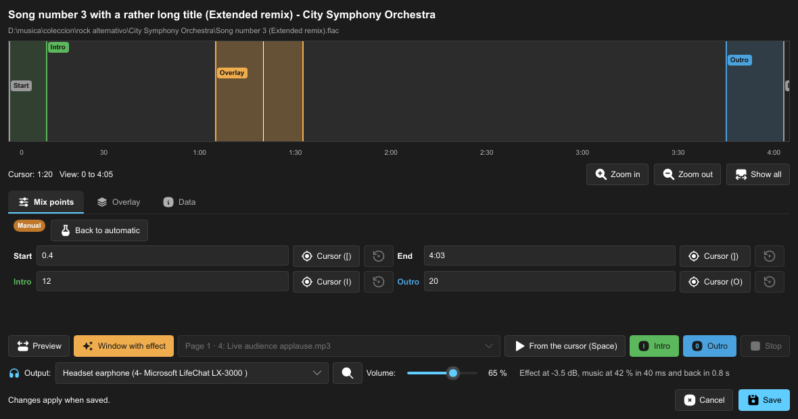
Track editor, Mix points tab.
Waveform
A click moves the cursor. The marks (Start, Intro, Overlay, Outro, End) are dragged with the mouse; the orange area of the overlay window is dragged as a whole.
Zoom in, Zoom out and Show all control the zoom (also + and −).
Mix points tab
Start and End (first line): where the song starts and stops playing; what is outside is skipped.
Intro and Outro (second line): length of the beginning and the ending used for mixing.
Each value is edited with a click on its field (Enter confirms) or with its Cursor button, which sets it to the cursor position. The undo button next to it restores the previous value.
The Automatic / Manual label shows the origin; Back to automatic goes back to what the analysis proposes.
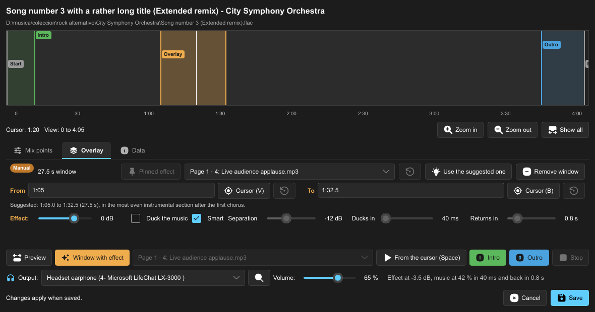
Overlay tab: window, pinned effect and ducking.
Overlay tab
Use the suggested one takes the window proposed by the analysis; Remove window / Create window.
From and To, with their Cursor (V) and Cursor (B) buttons and their undo buttons.
Pinned effect: the combo box chooses the effect that plays on its own with the song. If the combo box shows "(none)", the Pinned effect button directly pins the effect chosen for testing (the combo box next to Window with effect). The undo button next to it goes back to the previous choice. Only effects board effects of type Effect or Dry voice are offered.
The volume and ducking settings are the same as in the effects panel.
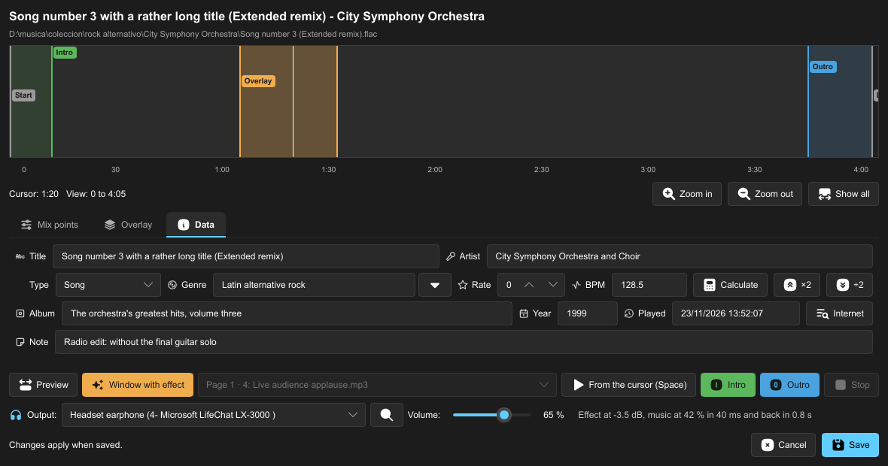
Data tab.
Data tab
Title, artist, type (the combo box on the left: Unclassified, Song, Edited song, Commercial, Announcement, Advertising, Podcast, Effect or Dry voice), genre (free text; the button on the right drops down every genre that already exists in the catalog, in alphabetical order, so the list grows with the ones you use; it scrolls with the wheel or the bar and you choose with a click), rating from 0 to 5, BPM (empty: the analyzed one; Calculate, ×2 and ÷2 correct it), album, year and note: a free remark about the song or item ("radio edit", "night use only"). The note is shown when hovering over the title in the playlist and over the effect button; leaving it empty deletes it.
Preview
Button
What it plays
Preview
The whole song, from the start mark to the end mark.
Window with effect (amber)
From 3 s before the window to 2 s after it, with the pinned effect (or, if there is none, the one chosen in the test combo box) playing when the window opens, with the same ducking as on air.
From the cursor (Space)
From the cursor to the end. Space again stops.
Intro (green)
From the start to 3 s after the intro.
Outro (light blue)
From 3 s before the outro to the end.
Stop
Stops the preview.
Output and volume. The Output combo box chooses where the preview plays:
Same output as the music: you can only preview with the music stopped or paused.
Another output (for example, headphones): you can preview while the music is on air, and the test effect also plays there. It cannot be the same output as the music; if the card is disconnected, the preview goes back to the music output on its own and says so.
The magnifying glass button searches for the outputs again. Volume is the preview's own volume (song and test effect). The output and the volume are remembered.
Saving
Save applies the changes and remembers them for that file; Cancel discards them.
16. Classifying the catalog by type
To classify a file, open it in the editor and choose the Type on the Data tab. Spots can also be classified several at a time from the spot selector (section 17), and through MCP with definir_datos.
If a song that changes type had a pinned effect or an overlay window, the program warns that they will be removed (along with the intro and the outro) and asks for confirmation. Cancel goes back to the previous type.
Effects: assign them to the effects board and mark them with type Effect from the button's Edit.... There you can also trim their section with Start and End. An Effect file does not go into the playlist: Add leaves it out with a notice, Insert in the playlist is disabled and a song already in the playlist cannot become an Effect (it must be removed first).
Dry voices: they can go on the effects board, to play over songs like an effect, and also in the playlist as separators (with Insert in the playlist or Add).
Podcast: a pre-recorded show. For it to air at a fixed time, schedule it as a break with a single spot (section 17); it can also be inserted in the playlist by hand.
Commercial, Announcement and Advertising are inserted in the playlist and form breaks; from the effects board, Insert in the playlist adds them even if they are already there (they can air in several breaks).
17. Scheduled breaks and commercials log
Scheduled breaks
A scheduled break is a group of spots that airs on its own at set times, for example "at 10:30 and every 30 minutes until 20:00, Monday to Friday". It is scheduled in the File › Break schedule... window (Ctrl+T) or through MCP with programar_tanda. A break can carry Commercial, Advertising, Announcement, Podcast or Dry voice: for a podcast to air, for example, every Saturday at 21:00, build a break with that single spot and choose Fade out what is playing at the exact time if it has to start on the dot.
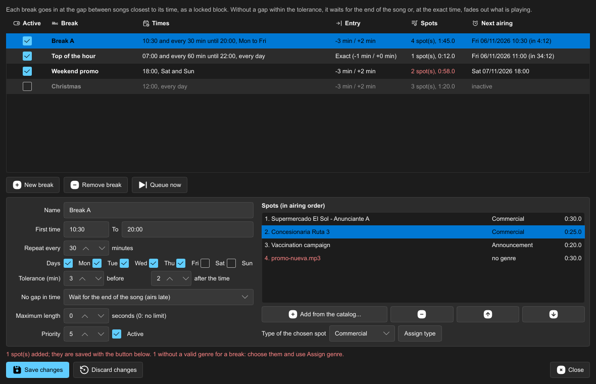
The schedule: at the top, the breaks with their next airing; at the bottom, the form of the chosen one and its spots (in red, one without a valid type).
The table shows each break with its times, how it goes in, its spots (in red if one is missing or has no valid type) and the next airing with its countdown. The Active checkbox suspends or resumes it without deleting it; when resumed, what already passed does not count as lost.
The form: name, first time, Repeat every (0 = once a day), To (last time of the day), days, tolerance before and after, what to do with No gap in time, Maximum length (how long it can last with the order spots; 0 = no limit), priority and whether it is active. Schedule break or Save changes applies it; Discard changes goes back to what was saved. When renamed, it keeps its last airing.
The spots air in the order of the list: Add from the catalog... opens the spot selector (see below) and the arrows sort them. If a spot has no type, choose it and use Assign type (Commercial, Advertising or Announcement; it is saved in the catalog, not in the file).
Queue now puts the break at the next cut, outside its time, without changing its schedule (for example, to make up for a lost airing).
Below the clock of the main window you can see the next break and how long until it airs ("Next break: «Break A» 10:30 (in 4:12)"); a click opens the schedule.
Without cutting songs: the break goes in at the natural gap between two songs closest to its time, within the tolerance (by default, up to 3 minutes before or 2 after). If the song ends early and the next one would run too long, it goes in earlier; if the song that is playing ends after the window, it airs late, at the end of that song.
As a locked block: a few minutes before, its spots are queued after the song that is playing, enclosed in a locked block (Shuffle and BPM do not break them up). If the song that is playing is inside another locked block, the break goes after that block; if another break is already coming, it goes behind it.
Break types only: the spots must be of type Commercial, Advertising, Announcement or Dry voice. That way they do not mix with the music or with each other: the previous song plays to its end and each spot airs whole.
Fixed times: each time comes from the rule, not from adding the interval to the last airing, so a late break does not push the following ones. The airings handled are recorded, and are not repeated even if the program restarts.
Exact time: if the break is marked Fade out what is playing at the exact time and there is no natural gap within its tolerance, it is queued shortly before and, at the scheduled time minus the fader seconds, the song that is playing fades out so that the first spot airs on the dot. A spot or a locked block is not cut: in that case it goes in at the end, as with tolerance. It is useful for the top of the hour or a network link.
Priority: from 1 to 9. If two breaks have the same time, the one with the higher priority airs first and the other goes right behind it.
Lost airings: if nothing is playing during a break's window (player stopped or paused, or the program closed), that airing is considered lost, a notice appears in the status bar and it is recorded in the log.
Through MCP, listar_tandas shows each break with its next airing, encolar_tanda queues it right away and quitar_tanda removes it from the schedule.
Catalog spot selector
The spots of the breaks and the orders are chosen from the station catalog (everything that ever entered the playlist), not from the file browser. Add from the catalog..., in the schedule or in the orders, opens the selector for the break or order being edited.
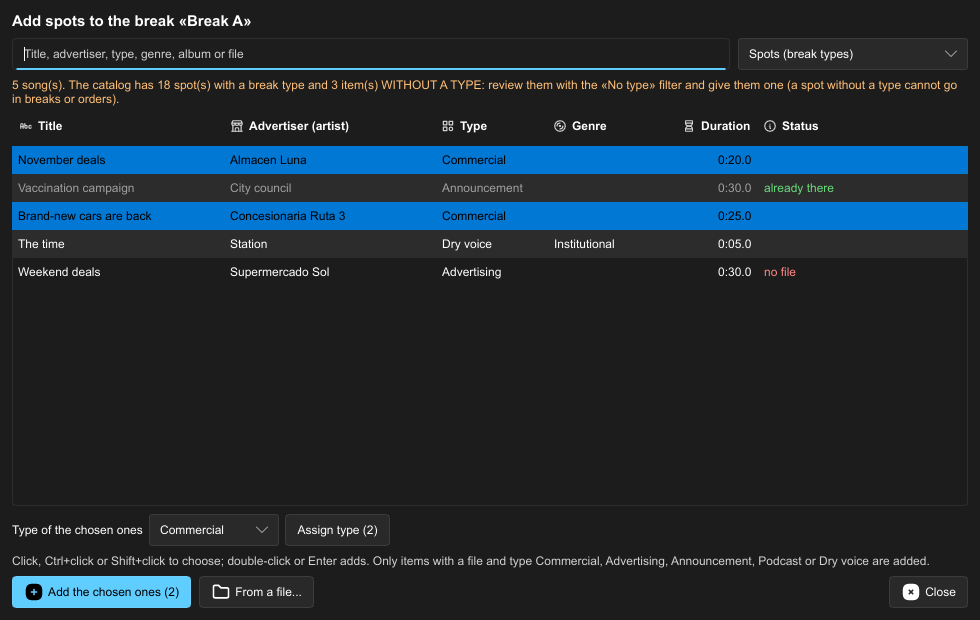
The selector with two spots chosen; at the top, in orange, the warning about catalog items that have no type.
Search and filter: you search by title, advertiser (the record's artist), type, genre, album or file. The filter shows the Spots (break types: Commercial, Advertising, Announcement or Dry voice), the No type items or the Whole catalog (except effects, which only go on the effects board).
Validation: only those with a file and a break type are added. The rest show in red in the Status column with their reason ("no type: assign one", "Song: does not go in breaks", "no file"), and if chosen they are not added: the notice at the bottom says which and why. Those already in the break or order are marked "already there" and are not repeated.
Missing types warning: the summary counts the catalog's spots and, in orange, the items without a type. With the No type filter you review them all and, choosing several, Assign type gives them Commercial, Advertising, Announcement or Dry voice at once. The type stays in the catalog and applies to the playlist, the breaks and the orders; the genre does not change.
From a file... is for a new spot that is not yet in the catalog. It goes in even without a type, but with a warning, and the break or order is not saved until one is assigned; once done, it stays in the catalog.
Advertising orders
An advertising order is what an advertiser books: for example, "advertiser A, from November 1 to 30, every 2 hours from 08:00 to 20:00" or "advertiser B, 3 times a day". They are loaded in File › Advertising orders... (Ctrl+Shift+T) or through MCP with programar_orden. Their spots are not placed by hand: they are distributed on their own in the scheduled breaks.
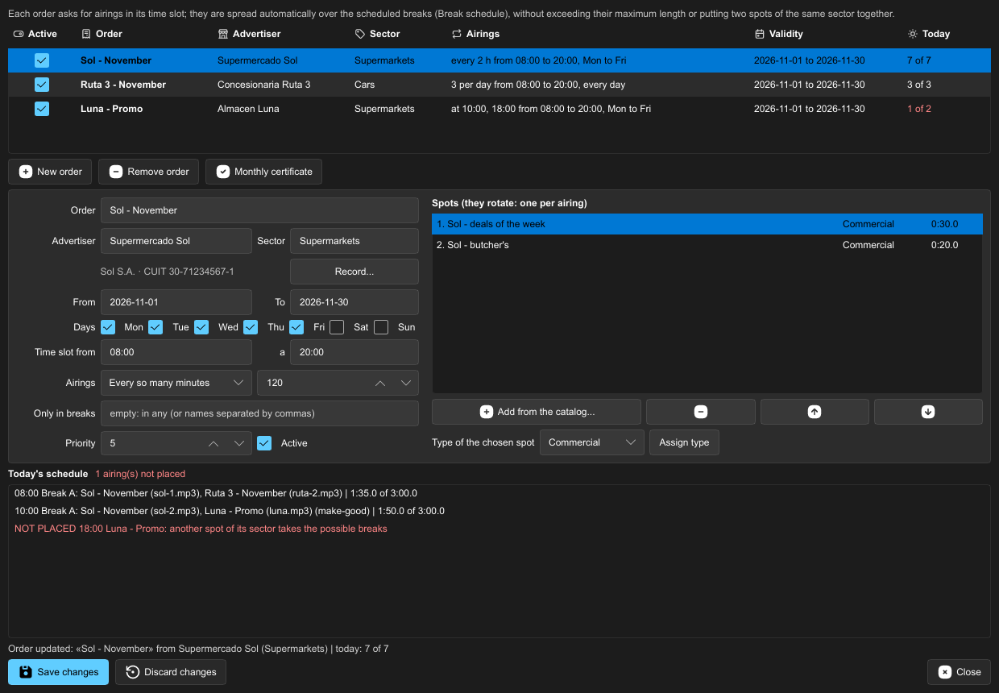
The orders with how many airings were placed today; at the bottom, today's schedule with one airing not placed because of competition.
Frequency:every so many minutes from the start of the time slot (every 120 = every 2 hours: 08:00, 10:00… 20:00); times per day, one in each equal part of the time slot (3 per day from 08 to 20: one in the morning, one in the afternoon and one in the evening, in the least loaded break of each part); or at fixed times (mentions), in the closest break up to 15 minutes before or after.
Validity, days and time slot: the order only asks for airings between its dates, on its days and within its time slot. Only in breaks limits it to certain breaks (empty: any).
Spots in rotation: each airing carries the spot whose turn it is, and the rotation continues from one day to the next. They are added with Add from the catalog..., as in the breaks, and must be of type Commercial, Advertising, Announcement or Dry voice.
The distribution (daily schedule) places the hardest airings first, those with the fewest possible breaks, and with the same difficulty those with the highest priority. It respects the maximum length of each break, and does not put two spots of the same sector in the same break (competitive separation) nor two of the same order. When the break is queued, its fixed spots go first and then those of the orders.
Not placed: what does not fit stays in red in Today's schedule with its reason ("there are no breaks between…", "the possible breaks are full", "another spot of its sector…"), so it can be solved before going on air: add a break, extend its length or the order's time slot. The Today column shows how many of the airings the order asks for were placed.
Make-good: if a break is lost (nothing was playing at its time) or an order spot airs cut, that spot is made good on its own in the next possible break of the same day, within the order's time slot. Pending make-goods survive a restart.
Proof-of-broadcast certificate:Monthly certificate builds, for the advertiser of the chosen order, a CSV in the certificados folder with the booked airings, those aired complete, those cut and the fulfillment of each order, plus the detail of each airing (time, spot, order and break), and opens it. Through MCP, certificado_de_emision accepts any date range within the three months that are kept.
Advertisers
Each advertiser's record keeps the data to bill and reach them: trade name (the one their orders use), company name, tax ID (CUIT), sector, contact person, phone, email, address, agency that represents them and notes. It is loaded in File › Advertisers..., with Record... from the order or through MCP with registrar_anunciante.
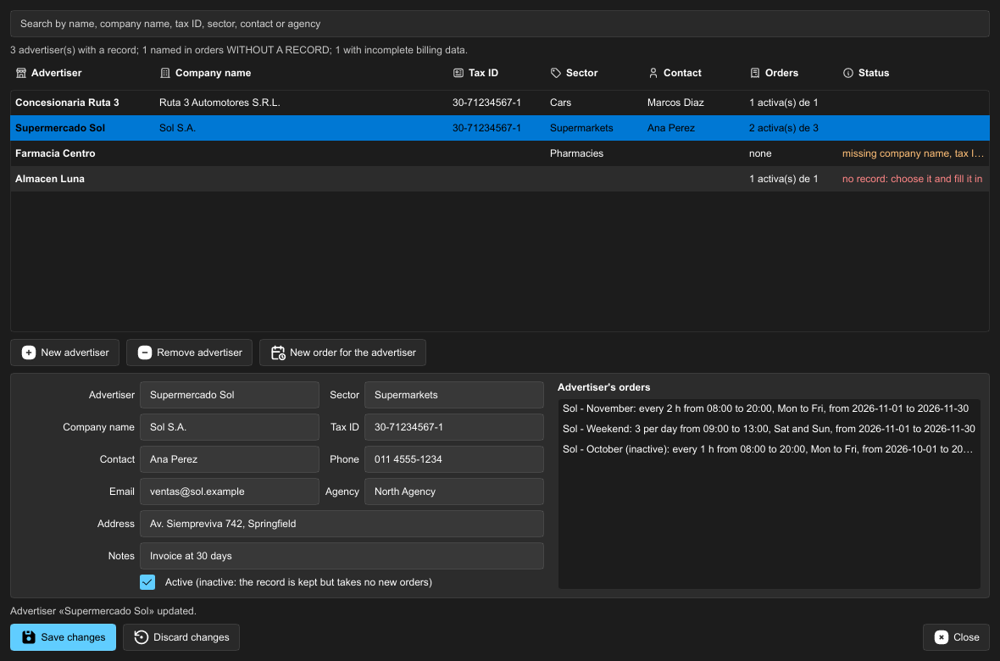
The advertisers with their orders; at the bottom, the record of the chosen one. In red, one named in orders that does not have a record yet.
Validation: the CUIT (the Argentine tax ID) must have 11 digits and a correct check digit; it is accepted with or without dashes and saved as 30-71234567-1. The email and phone are checked. The trade name ignores case and accents: "Almacén Luna" and "almacen luna" are the same advertiser.
What is missing: the Status column warns in orange if the company name, the CUIT or a phone or email is missing. In red appear the advertisers named in orders without a record: when chosen, the form is filled in with their name and the sector of their orders.
With the orders: below the advertiser of an order you can see their company name and CUIT, or the warning that they have no record. An order from an advertiser with a record takes their name exactly as written in the record and, if it does not state a sector, the record's. New order for the advertiser opens the orders with that advertiser and their sector.
Renaming, deactivating and removing: when renamed, their orders move to the new name. An inactive advertiser keeps their record and orders, but does not accept new orders. Only the record of an advertiser without orders can be removed.
Certificate: the proof-of-broadcast certificate carries the advertiser's company name, CUIT and contact in its header.
Commercials log
Every on-air airing of billable advertising, items of type Commercial or Advertising, is recorded in the comerciales folder of the data, in one file per month (2026-11.csv), with a semicolon separator, to open it in a spreadsheet. The column names are in Spanish:
Inicio
Fin
Segundos emitidos
Duracion
Completo
Titulo
Artista
Genero
Archivo
Tanda
Orden
Tipo
2026-11-02 14:05:33
2026-11-02 14:06:03
30,0
30,2
Si
…
…
Pop
…
Tanda A 14:00
Sol - Noviembre
Comercial
The columns are: start, end, seconds aired, length, complete, title, artist, genre, file, break, order and type. Completo ("Si" or "No") says whether it aired whole or was cut (by Next or Stop). The seconds use a decimal comma. Tanda is the scheduled break that aired it and its scheduled time; it is empty if the spot was placed by hand. Orden is the spot's advertising order, if it belongs to one. Tipo (Comercial or Publicidad) goes last so that the spreadsheets of earlier months, which do not have it, can still be read the same way; Genero is the record's free style. Announcements (the station's own messages), Dry voices and Effects are not recorded.
Rotation: the current month and the two previous ones are kept, so last month is always complete for billing. When a new month starts, the file of the month left out is deleted; keep a copy first if you need it for longer.
Querying: through MCP, registro_de_comerciales sums up the airings between two dates (complete, cut and airtime) and details them with their break; it can be filtered by advertiser, title or break.
Earlier versions: the single log comerciales.csv is split once into the files of each month (with the dates converted to ISO 8601) and the original stays as comerciales.csv.migrado.
Date and time format
Start and end are recorded in the computer's local time with the standard ISO 8601 format: YYYY-MM-DD hh:mm:ss, that is, year, month and day, and the hour from 0 to 23. For example, 2026-11-02 14:05:33 is November 2, 2026 at 14:05:33.
With this order the date is not ambiguous: a date like 02/11/2026 can be read as November 2 or as February 11 depending on the country. Also, spreadsheets recognize it as a date and sorting by that column leaves the airings in chronological order.
18. Keyboard shortcuts
Main window
0–9
Fire the button's effect
Ctrl+F
Search the playlist
Ctrl+Shift+F
Search the catalog
Ctrl+T
Break schedule
Ctrl+Shift+T
Advertising orders
Ctrl+O
Open playlist
Ctrl+S
Save playlist
Ctrl+Shift+S
Save playlist as
↑↓Enter
Jump between results (in the search box)
Esc
Clear the search
Track editor
Space
Preview from the cursor / stop
[]
Start / End at the cursor
IO
Intro / Outro at the cursor
VB
Window From / To at the cursor
←→
Move the cursor 0.1 s (with Shift, 1 s)
+−
Zoom in / zoom out
19. Catalog maintenance
The catalog recognizes each file by its path. If a music folder is moved to another drive or another folder, the records keep pointing to the old path and the program sees those files as new, without their data. File › Catalog maintenance... solves this without losing anything.
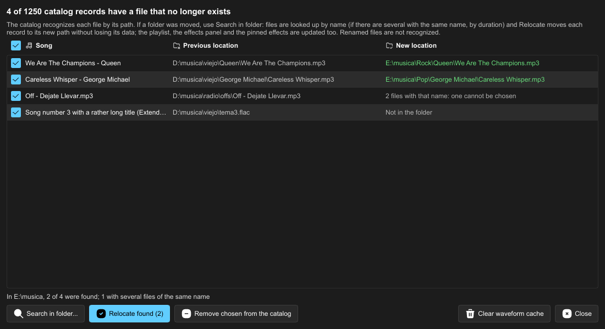
Records whose file no longer exists, with the new location found.
The window lists the records whose file no longer exists, with their song and old location.
Search in folder... asks for the folder where the files ended up and scans it with its subfolders. Each file is searched by its name, ignoring case; if there are several with the same name, the one with the same length as the record is chosen. The New location column shows what was found in green.
Relocate found moves each chosen record to its new path without losing its data (mix points, overlay, type, genre, rating, BPM, last play) and also updates the current playlist, the effects board buttons and the pinned effects that pointed to those files.
The program remembers each relocation: a playlist saved before the change opens with the new paths (it is marked with * so you can save it up to date).
Remove chosen from the catalog deletes the records of files that will no longer be used. It asks for confirmation and does not touch any audio file.
Clear waveform cache deletes the saved waveforms of files that no longer exist, were moved or changed, and shows the space freed.
The checkboxes on the left choose which records the actions apply to; the one in the header checks or unchecks them all.
The search recognizes moved files, not renamed ones: a file with a different name is not found. If two or more files have the same name and the same length, none is relocated, so as not to link the record to the wrong song.
Updating the data: tags and MusicBrainz
The catalog copies the tags of each file (title, artist, album, year and genre) the first time it sees it; after that, what it saved rules, corrected or not. To improve that data there are two sources, and with both you review what would change before applying it. Only the station catalog changes: the files are not touched.
Reread the tags: after correcting them with another program, such as MusicBrainz Picard or Mp3tag.
Fill in from MusicBrainz (musicbrainz.org, the free music database Picard uses): it looks up each song by title and artist and proposes the album it was released on, the year of the first release, the most voted genre and the title and artist as they appear there. It needs an internet connection, no key, and queries one song per second (on a large catalog it takes a while; it can be stopped and what was found so far applied).
They are used from three places:
In the playlist, right-click on a row › Update data: it applies to that row or, if it is selected along with others, to the whole selection.
In Search the catalog, with the Reread tags and MusicBrainz buttons: to the chosen songs or, if none are chosen, to all the search results. A previous search, such as genre:pop or year:1990..1999, narrows which songs it applies to.
In the editor, Data tab, MusicBrainz button: for the song being edited; what is applied shows up in the editor's fields.
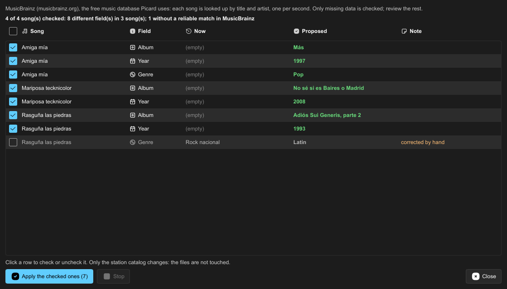
Data proposed by MusicBrainz: the missing data comes checked; the genre the user corrected by hand does not.
The Update catalog data window shows one line for each different piece of data: the song, the field, what the catalog says now and what is proposed. Only the checked ones are applied (click on the line or on its checkbox; the one in the header checks or unchecks them all). Deleting data is never proposed. These come checked:
always, those that fill in an empty field;
from the tags, also those that replace data you did not correct;
from MusicBrainz, no replacement: data that already has a value is offered unchecked, for you to decide.
The catalog remembers which data you corrected by hand (in the editor or through MCP) or chose from MusicBrainz: those show the note corrected by hand and are not checked on their own. Records created before this version did not keep track of this; their data carries the note older record: corrections not tracked and is not checked on its own either. What is applied from the tags no longer counts as corrected.
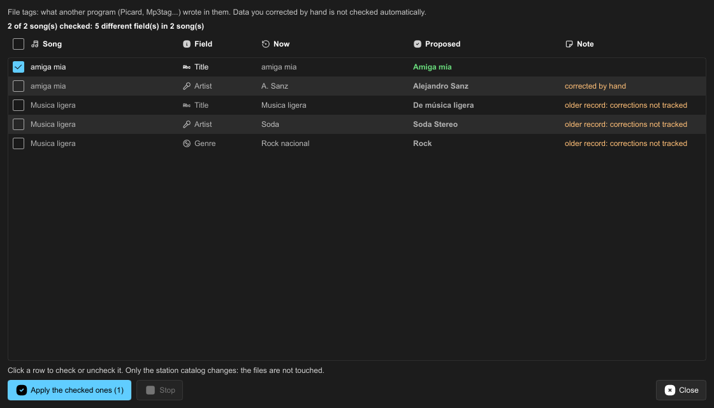
Reread tags: the artist corrected by hand and the data of a previous record stay unchecked.
If you use Picard: turn off Rename files and Move files in its options (or choose not to change the name or the folder). The catalog recognizes each file by its path and maintenance searches for them by name: a renamed file loses its record, with its mix points, rating and last play. The tags of WAV files cannot be read (the audio library discards them); it is better to tag MP3, FLAC or other formats.
MusicBrainz chooses the original recording: the one with the same title, a length similar to the file's (it discards live or extended versions) and the earliest first release; from its releases it takes the studio album, not a compilation. If no recording matches reliably, the song is counted as without a reliable match and nothing is proposed. It is worth reviewing what is proposed: for songs with many versions it may choose a different recording from the one in the file.
20. Troubleshooting
Problem
What to do
"There is no audio output available" on opening
Connect or enable a sound card and open the program again. On Linux, check that PulseAudio or PipeWire is running.
The preview says the output is not connected
Connect the card and press the magnifying glass next to the Output combo box. Meanwhile, the preview uses the music output.
A locked effect does not play
It is waiting for the song's overlay window (the button stays orange). If what is playing is not a Song (a commercial, a dry voice), it waits for the next one. Use Free mode for it to play right away.
An effect does not appear in the editor's combo boxes
Only effects board files of type Effect or Dry voice are offered: mark it from the button's Edit....
The status bar says a song "was skipped because the file does not exist"
The file was moved, renamed or deleted. Playback went on with the next song. If you moved it, use File › Catalog maintenance... to relocate it without losing its data; if you deleted it, Validate offers to remove it from the playlist.
A file cannot be added to the playlist
It is probably of type Effect: it can only be on the effects board.
MCP control does not respond
The player must be open. Check port 8765 (or the one in RAPTOR_MCP_PUERTO) and that no other program is using it.
The icon pinned to the taskbar is not updated
Unpin the program and pin it again: Windows caches the icons.
Help › Manual does not open this manual
Copy Raptor_Manual_en.pdf (or Raptor_Manual_es.pdf) next to the executable.
For any error, the log in the data's logs folder records what happened.
21. Design decisions
No database: an open format
MCP Raptor Player does not use a database. The catalog, the effects board, the playlists and the preferences are saved in JSON files, and the commercials log in CSV (see section 8). They are open formats that can be read with any text editor or spreadsheet, are copied or backed up just by copying the data folder and do not depend on the program to be consulted.
The volume allows it: with a break every half hour, the log adds up to a few tens of thousands of lines per month, which are read in milliseconds. So that it does not grow without limit, one file per month is kept and three months are preserved. The breaks and the log are accessed through their own contract (AlmacenDeTandas and AlmacenDeEmisiones), so if a database is needed later (several stations, reports covering years or queries from another computer) another implementation is enough, without touching scheduling or playback.
No file fingerprints (hashes)
When cataloging, the program does not calculate a fingerprint (hash) of each file's content to recognize it. A fingerprint only works if the file never changes: editing the audio or just correcting its tags changes the fingerprint, and the record would be unlinked from its file just as if it had been moved. That is why each file is recognized by its path, and moves are solved with catalog maintenance (section 19).
Translations in a gettext catalog
The texts are written in Spanish and their translations are in lang/en/LC_MESSAGES/mcp-raptor-player.po, a standard gettext catalog that can be edited with any translation tool. Both parts of the program use it: the Slint interface (texts marked with @tr) and the Rust code (the tr! macro). At build time the catalog is turned into code, so a translation with a wrong placeholder does not compile. herramientas/traducciones.py collects the new texts and reports those still missing a translation, and an automated test checks that none is missing. To add another language, it is enough to add its catalog in lang/ and offer it in the menu.
The content is immutable
MCP Raptor Player starts from one premise: the audio files and their storage are not modified. It is neither an audio editor nor a tag editor (tagger):
It never writes to the audio files. The type, title, artist, genre, rating, mix points and everything corrected in the editor are saved in its own catalog (mezcla.json), not in the file.
The file's tags are read when it enters the playlist and only fill in what its record does not have yet: what the user corrected is not overwritten.
The philosophy asked of the user is the same: keep your storage organized and do not modify the audio files. If folders need to be moved, catalog maintenance links them again without losing data.
Appendix
A. Plug-ins that improve the sound
A system sound enhancer processes all the audio that goes out through the sound card: equalizer, compressor, bass boost, stereo widening and limiter. MCP Raptor Player does not need one to work, but it can help give character to the output or compensate for the studio speakers.
System
Plug-in
Windows
FxSound (free and open source). It installs as its own output device, for example Speakers (FxSound Audio Enhancer), which processes the sound and forwards it to the real card. If FxSound is the Windows default output, Raptor's music goes out processed.
Linux
EasyEffects (free and open source), for systems with PipeWire. It is installed from the distribution's software store or with Flatpak. Raptor goes out through PulseAudio, which in current distributions is handled by PipeWire, so EasyEffects processes its output in the Output section.
Recommendations
Leveling:Level volume evens out the songs before the output; the enhancer acts afterwards, on everything that goes out. For the leveling to still be noticeable, use gentle compression in the enhancer.
Clipping: bass boost and the equalizer raise the level. Turn on the enhancer's limiter or lower its output gain so it does not clip.
Preview: if in the editor you choose the real card (for example, the headphones) as the preview output instead of the enhancer's, you hear the songs as they are, unprocessed.
Effects and TTH announcement: they go through the same path as the music, so the enhancer processes them the same way. Nothing needs to be adjusted in Raptor.
Air processor: if the station already uses an external audio processor or one in the transmitter, the system enhancer is usually unnecessary: two compression chains in a row flatten the sound.
 Song
Song Edited song
Edited song Commercial
Commercial Announcement
Announcement Dry voice
Dry voice and the locked blocks
and the locked blocks  have their own.
have their own. ) the panel shows the song's waveform instead (see below). On the right, the clock: the time, the date, the weather of the chosen location (temperature, humidity and location; a click lets you change it and hovering shows how long ago the last reading was) and, if there is one, the next break.
) the panel shows the song's waveform instead (see below). On the right, the clock: the time, the date, the weather of the chosen location (temperature, humidity and location; a click lets you change it and hovering shows how long ago the last reading was) and, if there is one, the next break. ) and the volume (, double-click: 80 %) and fader (
) and the volume (, double-click: 80 %) and fader ( , mix and fade seconds; double-click: 5 s) sliders. The gear shows or hides the volume, the fader and the playback options: when hidden, there is more room for the song name and the window looks cleaner. The choice is remembered.
, mix and fade seconds; double-click: 5 s) sliders. The gear shows or hides the volume, the fader and the playback options: when hidden, there is more room for the song name and the window looks cleaner. The choice is remembered.